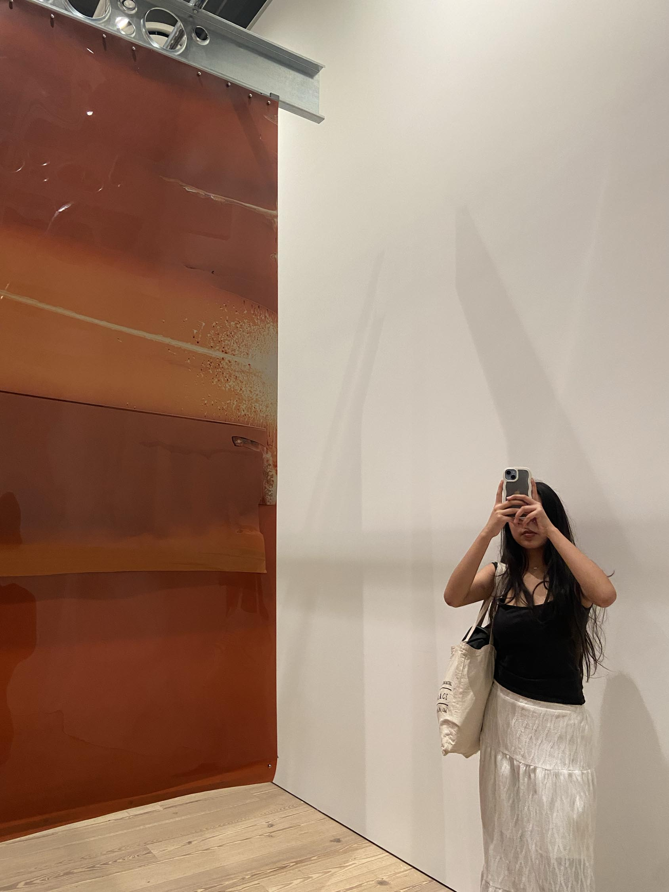
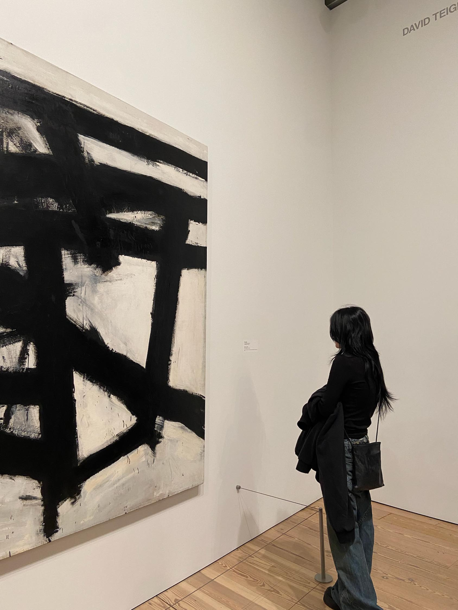
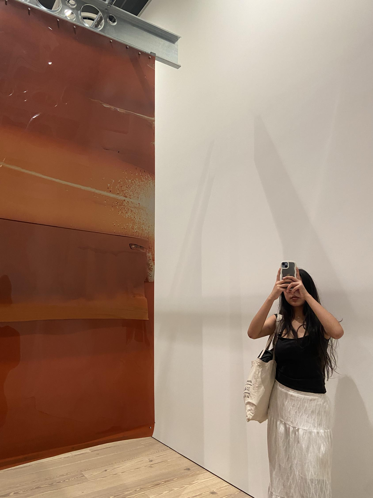
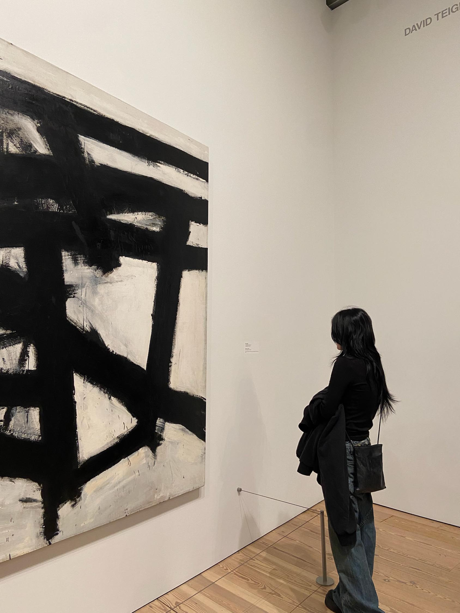
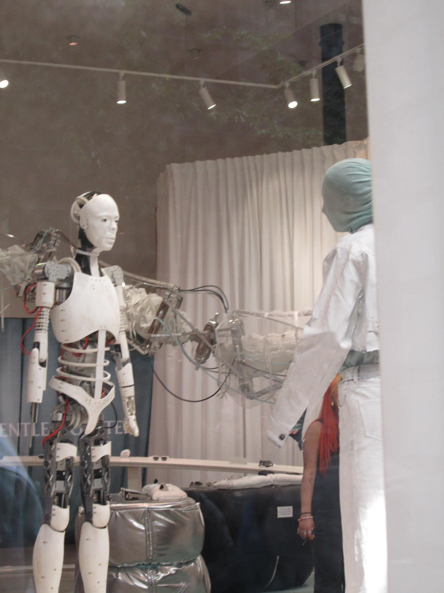
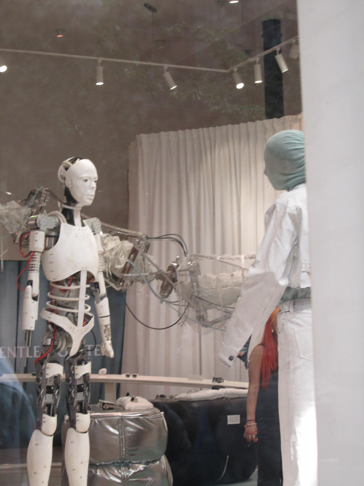

Humans and Nature
In this photography collection, I focused on exploring the contrast between human and nature, capturing the tension and harmony that coexist in their interaction.
Through my lens, I sought to highlight how human structures and interventions—buildings or machinery—stand in stark contrast to the organic forms and textures found in the natural world.
The rigid lines and geometries of man-made elements often juxtaposed with the fluid, unpredictable patterns of nature. Yet, in some frames, there's an undeniable connection.
view full collection
 





 

Shot on Canon PowerShot A2300 HD